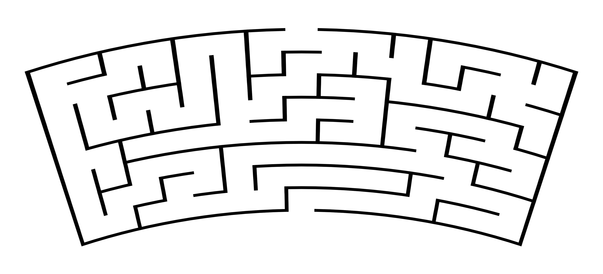
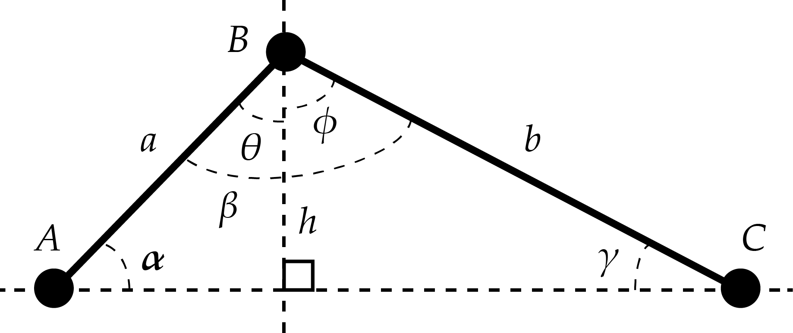
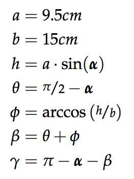
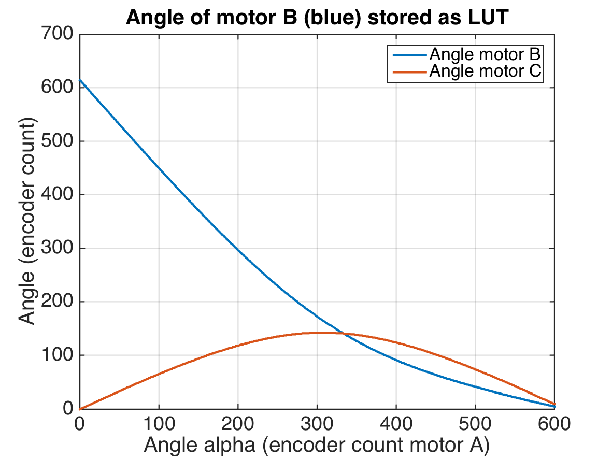

Responsible: Mathias Grelck Johnsen (s123249)
Group: Cm^3
Course: Modular Robotics (31384) in June 2015
Abstract
The drawing bot, nicknamed Stabbie is easily controlled with a joystick. The purpose was to create a remotely operated robot arm capable of sustaining its head levelled at a fixed height throughout its range of operation. This makes it possible to draw on a flat surface with even pressure using a pencil.
Introduction and Design Specification
The task is to create an interacting robot which is judged on the basis of the following three criteria
Playfulness
Originality
Design and Implementation
The drawing robot should thus be able to engage the user, by presenting a challenge which is sufficiently difficult, to allow for a progression in the user's skillset in handling the robot, and ultimately make the user feel in a state of flow[Lecture 9, D. J. Christensen, link[1]] To adress this criteria, a game has been developed where the user must complete a maze as fast as possible without touching the edges of the maze.
A set of mazes has been created using an online maze generator[2] and edited in Adobe Photoshop in order to comply with the circular 2 dimensional system of the robotarm. See example in Figure 1.

Figure 1: Maze example.
We believe that Stabbie deliver a great experience in playfulness because of this game.
The two other criteria are purely up to the user to evaluate, as we, of cause, have tried our best in designing Stabbie.
Levelling the head
The head of the robot arm is levelled by calculating the angle, beta and gamma, of motor B and C from the variable angle, alpha, of motor A. This is done by simple trigonometric calculations aimed toward maintaining an othogonal relationship between the height of motor B, h, and the distance between motor A and C. See Figure 2.


Figure 2: Trigonometric calculations of motor angles for motor B and C based on the variable angle of motor A.
This trigonometric property is used to calculate all possible integer encoder values such that they can be accessed directly in a LookUp Table (LUT) by the written C program. See Figure 3.

Figure 3: Plot of trigonometric calculations. The blue line shows the integer values stored in a LUT to be used in the written C program.
System stability
The motor's movements have been filtered using a simple lowpass filter which in effect ignores changes in displacement larger than a suitable value determined empirically. This also means that it's not possible to move the arm faster than this certain value allows. This has been observed to not be a problem when users solve the mazes.
The dynamixel motors have a PID controller build in to the motorcontrol, so further filtering was not necessary for the motors to run smooth enough for the purpose of this game. We don't want to make it too easy, now do we?
Program structure
The overall program structure is based on the three preceeding tasks and not much has been changed in terms of stateflow or package structure.
Results
Stabbie performed well in all areas, even winning Design and Implementation with a score of 4.6 out of 5.
The overall assessment was a score of 4.2 out of 5, resulting in a third place in the course competition.